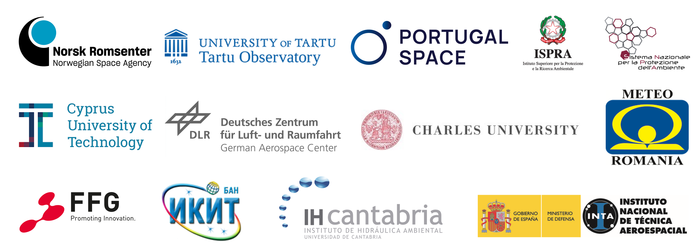
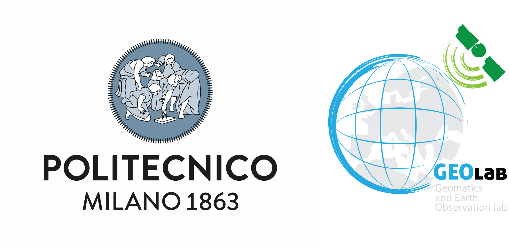
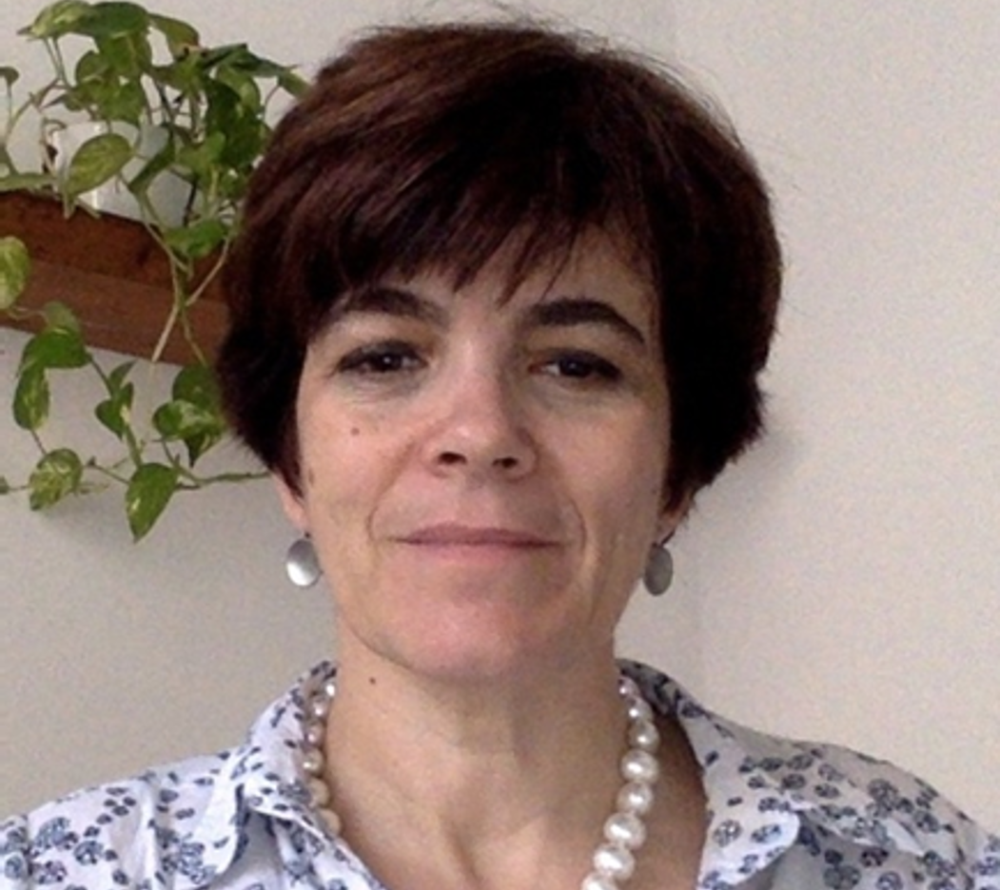
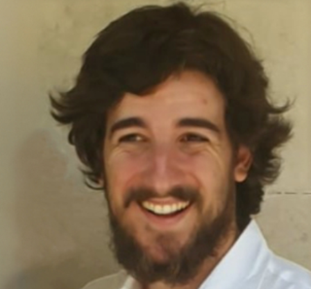
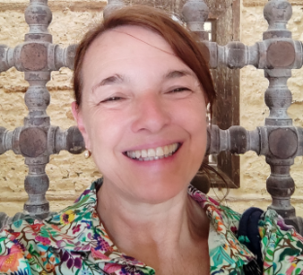
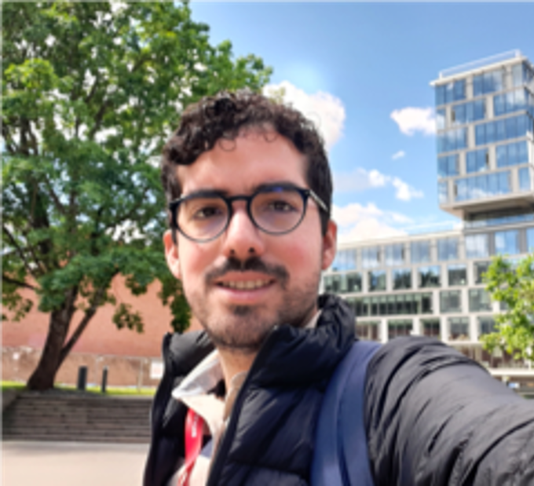

Credits
QGIS.org, 2021. QGIS Geographic Information System. QGIS Association. http://www.qgis.org
Partners
 {kind=link}
Co-funded by the European Union
Disclaimer
Co-funded by the European Union’s Caroline Herschel Framework Partnership Agreement on Copernicus User Uptake under grant agreement No FPA 275/G/GRO/COPE/17/10042, project FPCUP (Framework Partnership Agreement on Copernicus User Uptake).
License Creative Commons — Attribution-NonCommercial-ShareAlike 3.0 Unported — CC-By-NC-SA
Content of the course
{kind=link}
Alberta Albertella. From 2015, Associate Professor at Politecnico di Milano. Professor of Surveying and Statistics for Civil Engineering Bachelor. Author or coauthor of more than 100 national and international scientific research publications. Her mai research activities are: Statistical and numerical data analysis with applications to physical geodesy (geoid estimation), remote sensing (image classification), digital Mapping. Estimation theory, statistical inference, Bayesian methods. GIS applications for the validation of spatial datasets.

{kind=link}
Lorenzo Amici was born in Rome, Italy, in 1995. He obtained his BSc degree in Environmental Engineering at the University of La Sapienza, Rome, in 2017, and his MSc degree in Geoinformatics Engineering at Politecnico di Milano in 2021, with a thesis focusing on landslide susceptibility mapping and displacement monitoring. In February 2022 he joined the GEOlab team as a temporary research fellow, focusing on the analysis of lake water quality with Remote Sensing data. In November 2022 he started his PhD in Geomatics at Politecnico di Milano. His main field of research is the study of the effects of environmental phenomena on human health with Artificial Intelligence.
{kind=link}
Stefano Brazzoli was born in Crema (Cremona), Italy, in 1998. He received a B.Sc. degree in Environmental Engineering from Politecnico di Milano university where he is also currently enrolled in a M.Sc. in Geoinformatics Engineering. After a period abroad at the University of Bonn (Germany) in 2023, he is now collaborating with Politecnico’s GEOlab in the creation of this e-book.

{kind=link}
Maria Antonia Brovelli is a professor of GIS and Copernicus Uptake at the Politecnico di Milano (PoliMI), member of the School of Doctoral Studies in Data Science at “Roma La Sapienza” University. She was the Head of the Geomatics Laboratory of PoliMI (1997- 2011) and the Vice-Rector of PoliMI for the Como Campus (2011-2016). She is the chair of ISPRS WG IV/4 “Collaborative crowdsourced cloud mapping (C3M)”; member of ESA ACEO (Advisory Committee of Earth Observation); co-chair of the United Nations Open GIS Initiative, Chair of the UN-GGIM (Global Geospatial Information Management) Academic Network, mentor of the PoliMI Chapter of YouthMappers (PoliMappers).

{kind=link}
Rodrigo Cedeño was born in Mexico City. After obtaining the B.Sc. in Mechatronics Engineering he worked for 8 years at FIAT, first as a Motion Analysis Engineer and afterwards as a Vehicle Dynamics Engineer. In 2021 he obtained an M.Sc. in Geoinformatics Engineering at Politecnico di Milano. In 2022 he obtained an MSc. in Environmental and Land Engineering at Politecnico di Torino. During his Master’s he participated in the multidisciplinary and international honour program Alta Scuola Politecnica. Currently, he is a PhD student in Geomatics at Politecnico di Milano. His main research fields are Artificial Intelligence applied to atmospheric pollution using Earth Observation. He also specialises in open geospatial infrastructures such as the Open Data Cube and Blockchain.
{kind=link}
Alberto Vavassori was born in Sarnico (Bergamo), Italy, in 1995. In 2019 he obtained the M.Sc. degree with honours in Environmental and Land Planning Engineering at Politecnico di Milano, with a thesis about the combined use of Remote Sensing and Volunteered Geographic Information for Crisis Mapping applications. From September 2020 to October 2021 he was a temporary research fellow at the GEOlab of Politecnico di Milano. Since November 2021 he has been a PhD student in Environmental and Infrastructure engineering. His research focuses on Earth Observation and Citizen Science for urban climatology and local climate zone mapping.